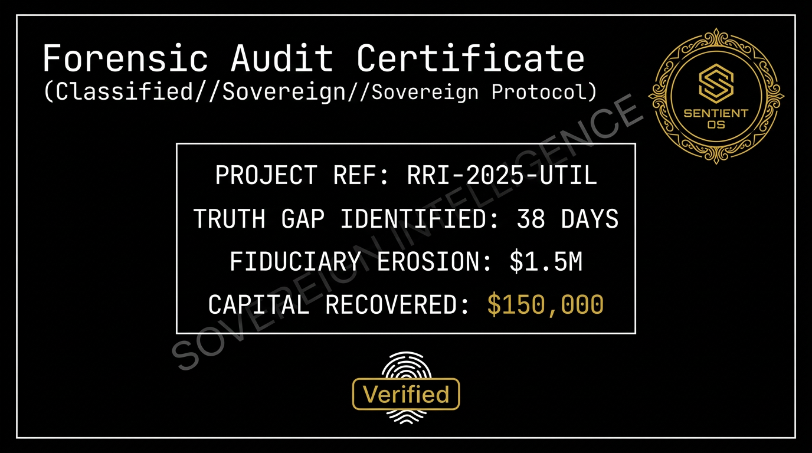

The Forensic Audit of a $25M Regulated Portfolio. Evidence of how we identified technical insolvency while the PMP-certified staff reported "Green".

"DATA DOES NOT HAVE AN EGO."
We ingested the Digital Exhaust—transcripts, Git commits, and engineering logs—bypassing the manual testimony of the project team to find the actual velocity of the work.
The Sentient OS identified a Silence Signal: a period where architectural decisions had stalled despite the budget being burned at 100% capacity. This revealed a 38-day lag in executive awareness.
Within 10 days, we delivered a Decision Memorandum that allowed the CIO to decommission "Zombie" workstreams, recovering $150,000 in immediate cash flow.
Executive Summary
"The MRI found the internal bleeding while the PMO was still reporting a healthy pulse. We didn't change the work; we just audited the physics of it to protect the P&L".
Recovery Metric
$150,000 Zombie Spend Liquidated
Previous Evidence Asset
← 02. The Digital MRINext Evidence Asset
04. EBITDA Strike Radar →